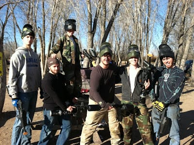
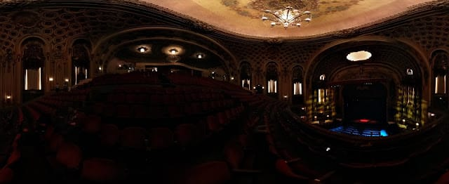
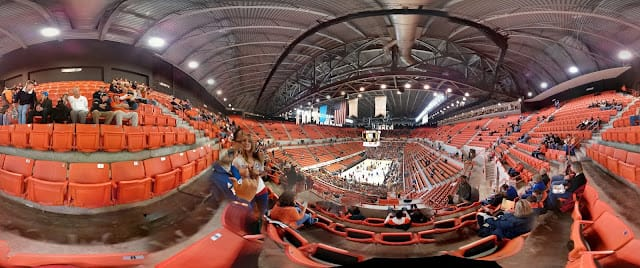
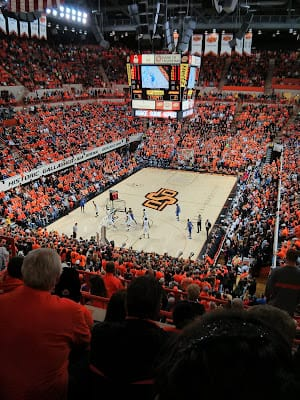

Motto: For your treatment I prescribe several highly concentrated doses of life.
I did an experiment concerning confirmation bias. As it turns out, everything I expected was true. #jokesthatsuck. That joke about confirmation bias comes to you from when I was driving earlier. There was an overly aggressive vehicle weaving in and out of traffic, doing his best to go as fast as humanly possible. when he passed me, he had a bumper sticker for a musical artist from a genre I despise (who it was isn’t relevant). I thought to myself “that person WOULD drive like a jerk, he listens to that crap.” Then I thought, if that person hadn’t had that bumper sticker, would I have noticed how jerkishly he was driving? Then, in the middle of traffic, I realized confirmation bias was back-seat driving me towards false conclusions. On a possibly related note: If you listen to Tech N9ne, there’s a good chance you suck at driving like a normal person. Since my last update, I have been BUSY. Like a YES man, I have done a lot of living. Here’s some summaries: Friday, Saturday, & Sunday:This past weekend I got to spend with three of the best dudes in the world. We battled, we laughed, we ate like kings. It was one of my favorite weekends I’ve ever lived. More specifically, we played paintball. We rented out some gear and time a place in Wichita. We played a variety of paintball-based games for 3 hours. We were a team of undefeatable Navy SEAL-like warriors. At least, that’s what I pretended we were was like; in actuality, we split up and ran around like idiots. We giggled with delight like little kids when we ran through dangerous paths of fire. We very clumsily made our way though each game, suffering heavy casualties. There was a lot of blindfire around cover. There was a lot of tripping and stumbles from cover to cover. It was only after my back started hurting from hunching over that I started Ramboing it up. My only legitimate kills happened when I was walking slowly, out in the open, shooting with one hand on an outstretched arm. Afterwards we bought steaks and grilled them. There were also several trips to various gun stores sprinkled around in there. My friends like guns. I like feel dumb when I’m around them in gun stores. They start speaking in code. Monday:Monday was spent in Topeka and Lawrence. Lunch with my sister. Dinner with Melissa’s sister. Ice cream with my ex-residents. I enjoyed hanging out with my sister, as always. Getting to know Melissa’s sister outside of the usual context was awesome. I thought it was going to be fun and comfortable. I underestimated just how fun it was going to be. I enjoyed it. Lastly, I spent an hour with my old residents from Templin. We ate ice cream and got talked to an uncomfortably large amount by a waiter that creeped the five of us out. Tuesday:Tuesday night I attended a comedic event presented by Nick Offerman, the guy who plays Ron Swanson on the television show “Parks and Recreation”. His character is the breakout star - and arguably the main reason the show is so popular. In the 2 hour comedic lecture, Mr. Offerman offered up a great deal of philosophy and hilarity. The driving theme of this event was a set of ten tips on how to live a productive and successful life. They varied from serious to silly, but were all very enjoyable. One example of the topics he covered: cellphones and mirrors are both useful tools, but are both widely abused and can cause us to miss out on the life we have. A relevant side note here - before the show I counted up the number of people in my section and I counted up the number of them that were looking at their cell phone rather than talking to their neighbors or taking in the beauty and grandeur of the Midland theater. There were 65 people in my section. There were 29 people looking at their phones. I made a note of it on my phone. While watching the event, I came to the conclusion that “Ron Swanson” is actually the same person as “Nick Offerman”. It was exactly as if Ron Swanson was standing on stage talking to a crowd - which was a good thing. The show was very enjoyable. Nick Offerman’s vocabulary and manner of speech are very unique and entertaining. I aspire to both speak and write with more voice. Eloquence be thy name, yo. Wednesday:Wednesday after work, two friends and I made a trek to watch KU play OSU in Stillwater, OK. The drive down was four and a half hours of junk food, blaring music, and anticipation. We went to the arena an hour before the game was to start. The arena itself had more seating than the Fieldhouse at KU, but this isn’t necessarily a good thing. It never approached the noise levels KU’s home games reach. Their videoboard was inferior in quality to ours and the video they showed on it lacked the historical significance or big moments that our pre-game video has. I’m not trying to say their video was bad, I’m just saying that I have been spoiled by KU. There were several OSU traditions I did like, though. Some of their chants were pretty cool. Mostly what I was impressed by was the fans we sat around. They were respectful. More than respectful, they were friendly. They cheered when they did will. We cheered when we did well. We chatted during down times. I think there was an unspoken kinship there. It helps that the three of us in blue were three of the nicest, least confrontational people you’ll ever meet (I just included myself on that).
As for the game itself, it was a dead-heat. After halftime, the game was tied. After regulation time, the game was tied. After overtime #1, the game was tied. After overtime #2, KU had scored 1 more point than OSU. Neither team lead by more than 5 at any point in the game. It was the most evenly matched college game I’ve ever seen, I think.
The drive home was 5+ hours of singing, cheering, and answering brilliant hypothetical questions. We were outrunning this massive snowstorm the whole way home. When we hit Wichita, it was devastating Stillwater. By the time we hit Emporia, it was decimating Wichita. And when got home, it was destroying Emporia. We managed to get home safely and in good spirits, mostly because we are the three best friends that anybody can have. The drive home really solidified the whole trip as a great bonding experience. One note on money - I have spent a ton. Gas to Wichita + Paintball: 40 1/3rd of gas to Stillwater + KU tickets: 80 I definitely can’t keep living at that pace. I have decided to forgo buying a TV in order to save money for a trip to Thailand.
Here are several pictures from the events detailed in this column: “Dirty Mike and the Boys”

The most compelling force to ever enter a paintball arena. The photosphere looks funny due to the general slanted configuration of the room.

The Midland theater is, as Nick Offerman put it, “ridiculously nice”. This is how he walked out onto the stage.
Ron Swanson, sans shirt.
“AJ, don’t move”

A photosphere of a relatively empty Gallagher-Iba Arena with less than an hour until tipoff. AJ moved between shots.
Rock Chalk

Gametime. The crowded ended up sporting a respectable amount of KU blue. We travel well.
And it hasn’t gotten any better. This is what we just barely missed. Taken outside my window at 7am.
Here is a video I took for the one second clip of the day:
(editor’s note from the future - this video lost to time)
Here is a different video I took that I wish could have been my one-second clip:
(editor’s note from the future - this video lost to time)
Top 5: Moments Since the Last Update
- After the last round of paintball was over, I shot an unsuspecting Josh in the butt
- On the way out of Gallagher-Iba Arena an OSU fan asked me if I was Jeff Withey’s brother - thus confirming what everyone always says about me and him looking alike.
- Nick Offerman sings one last song to say goodbye - “5000 Candles in the Wind” by Mouse Rat (a band also from Parks and Rec).
- Travis Releford stops the ball from rolling out of bounds with 3 seconds left in double overtime to seal up a 68-67 KU victory.
- My first paintball kill - I accidentally shot the referee in the neck.
Quote:
“Tip Number 6: Go outside. Remain. ” Nick Offerman